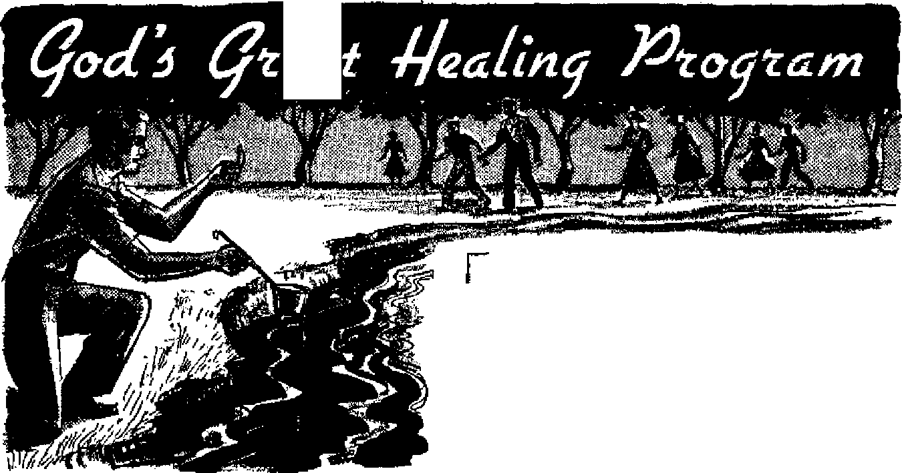

Are modern, faith healers performing miracles of God? --
Practical suggestions on this vital subject
---------1+ ---------
What the city that rioted against Paul is like today
** ----
What is behind the October 31 celebration?
News sources that are able to keep you awake to the vital issues of our times must be unfettered by censorship and selfoh Interests. "Awake I” has no fetters. It recognizes facts, faces facts, is free to publish facts. It is not bound by political ambitions or obligations; it is unhampered by advertisers whose toes must not be trodden on; it is unprejudiced by traditional creeds. This journal keeps itself free that it may speak freely to you. But it does not abuse its freedom. It maintains integrity to truth,
“Awake I” uses the regular news channels, but is not dependent on them. Its own correspondents are on all continents, in scores of nations. From the four corners of the earth their uncensored, on* th?* scenes reports come to you through these columns. This journal’s viewpoint is not narrow, but is international. It is read in many nations, in many languages, by persons of all ages. Through Its pages many fields of knowledge pass in review—government, commerce, religion, history, geography, science, social conditions, natural wonders—why, its cover* age is as broad as the earth and as high as the heavens,
“Awake I” pledges itself to righteous principles, to exposing hidden foes ^nd subtle dangers, to championing freedom for aH, to comforting mourners and strengthening those disheartened by the failures of a delinquent world, reflecting sure hope for the establishment of & right* eous New World,
Get acquainted with “Awake!” Keep awake by reading “Awake!”
PUBLISHBb SEMIMONTHLY By WATCHTOWER BIBLE AND TRACT SOCIETY, INC.
117 Adama Street Brooklyn 1, N, U. B. A.
N. H. Knorr, President Grant Scitkb, Secretary
Printing thli ittuei 1,450,000
Laii|aM«i la whlah thli rmiuIdi ft puhlklred: Bemlmontbly—-Afrikxins, English, Fhinlsb, French, Gemtu, HollMdieh, Norwegian, Spanish, Swedish. Monthly—Dinlib, Greek, Portuguese, Ukralnlao.
0111cm Yearly Bubscriptkn rate
AaitrlM, UA„ 117 Aduns 0L, Brooklyn 1, N.Y. |1 Airtnll*. 11 Beresford Bd., BtrathficVL N.8.W. 8/-ClUltle, 40 Irwin Are., Toronto 5, Ontario fl Eafllawd, 34 Crareh Terrace, London, W. 2 7/-
Naw Inland, G.P.tt Box 30, Wellington, C. 1 ?/-Math Afrlta, Prtrete Bag, EUrnfefontein, Tri. 7/-
Fiv® cento a copy
Riwlttanm ghonld be mt to office in your emm-try la compliance with regulations to guarantee safe drifrery of money. Bemittanere an accepted it Brooklyn from countries where no office is located, by Internitlcmil money enter only. Snbeeriptfph rotes in different countries are here stated tn local Cortney. Nsties at (with renewal blank)
h sent at leut two 11. nee before subscriptioa expires, Chinjte of U*re» when tent to our ofltae may be expected affective within on* month, fiend ymr old bs well as new addrere.
Entered m secood-claai matter at Brooklyn, NY. Act of Mank 3, 1870. Printed in V, 8. A.
CONTENTS
"Just the Opposite of
Halloween Vandalism Honors Dead
“Your Word Is Truth”
Jehovah’s Witnesses Preach in AI] the Earth—Ceylon
-VelumeXXXVI Broefcryn, N. ¥., October 22, 1H5
Number 2Q
Substitutes for Simple Truth
ANY humor in the cartoon surrounded the truthfulness of the situation it depicted. It showed two distinguished gentlemen reading the church bulletin board. Notices were headed; Oyster Supper, Bazaar, Play, Sale, Auction, Chicken Supper, Country Fair. Finally, bending low to read another almost hidden notice one man exclaimed: ‘Well, well! They also preach the gospel here!”
Many things besides the gospel are resorted to in order to get people into today's churches. Some organizations use ventriloquist preachers, "Gospel Puppets,*1 magic cr ultraviolet light to dramatize handwriting on the wall. A Colorado church passed out handbills that shouted: “Hey kids' Your Chance to Send a Balloon Sailing Through the Skies.... Bring Mom and Dad too,” And a Blackpool, England, clergyman even used an old-fashioned slingshot and a pistol loaded with blanks to color up his sermons. It appeals to the children, he said.
Often the most popular and respectable churches in town accomplish the same purpose by becoming social clubs—providing good times but little knowledge. They have parties, suppers, picnics, soft lights, sweet music, resplendent robes and a beautiful choir, but their members have a very shallow understanding of God’s Word. There is nothing particularly wrong with these things, but the point is that something is wrong when the churches must resort to them for attendance, membership or financial income. After all, the message should be more important than the trimmings.
Said The Christian Century last April 27: “Think of what is done with the church’s main chance: vapid pep talks, arid skull sessions, half-baked politics, halfcooked therapies, little Bible stories that completely miss the point of the Bible, outmoded, discredited stereotypes. This is our preaching, by and large. Men and women are ready to hear what God has spoken, and the preacher 'gets a few things off his mind,’ as one venerable parson defined his preaching,’1
Just a clear, simple and pointed explanation of God’s Word would be electrifying. The truth contained there is so different from the current religious diet that it alone would seize attention, stir controversy and jolt the people cut of the idea that all religions are the same. It is this very practice of rejecting controversy and difference on doctrine that prompts the apathy shown In today’s religions. It is because of this apathy that the churches must turn to socials, bazaars, plays, auctions, square dances and the like in order to draw attendance or to get the money they need. The fact that they must resort to these things shows that they have lost the urgency, faith and zeal that have always marked true religion.
Paul preached simple truth. But it was so startling that he did not need magic shows, gospel puppets or church bazaars to cause a sensation. When at Ephesus, he explained something that many people who bow to statues today do not know, namely, that “the ones which are made by hands are not gods,” This pure truth, simple as it sounds, so electrified the city that a great indignation mass-meeting was held and the whole city was filled with confusion. Early Christians were accused of turning the world upside down, not because they gave away free balloons and had picnics and church suppers, but because of the impressive truthfulness of their preaching.—Acts 19:26; 17:6, New World Trans.
They had none of the dullness of presentday religion, but had a real zeal for truth. It is through replacing that zeal for truth with men's theories, philosophies, economics, politics and little platitudes about life that today's religions have lost the vigor and enthusiasm that was an identifying characteristic of first-century Christians. And when the things modern religion has substituted for true worship fail to work, then rather than getting back to the view the apostles had, the churches go farther the other way, resorting to socials, bazaars, short sermons, long robes, a soft organ and a quiet atmosphere to lull and satisfy the people. But real spiritual benefit does not just soothe the mind with soft words and peaceful music, nor quiet the day’s cares with soft lights and flickering candles, but rather it helps you to get right with God.
True worship puts principle ahead of popularity- It is far more concerned with being friends with God than with the world. It finds that God's Word frequently disagrees with the world's course. It faces facts, explains facts and holds to them. Its truth is so startling in comparison with the world's present course that it can, as the apostles did,- seize attention, stir thought and awaken interest without having to use the “social” or “spectacular stunt*' approach.
Thus, it is through logic and reasoning, through impressing upon the minds of its hearers the simple truth of God's Word, that the fastest-growing Christian organization today operates. It deals with information rather than stunts, with teaching and with Christian education rather than with socializing. And though it is one of the smaller groups, it has had the largest of assemblies, having had even a fantastic 165 >000 wide-awake people at one hourlong Bible lecture in Yankee Stadium, New York, in 1953!
What is there about simple, easily understood Bible truth that, in this materialistic-minded twentieth century will draw so many people, and demand from them the same devotion that first-century Christianity had? That is an important question. It can most easily be understood through demonstration. So why not examine this activity of Jehovah's witnesses for yourself, to see what attracts so many earnest people, and what a religion is like that deals with the mind rather than with emotion, and with simple, clear Bible truths rather than with their many modern-day substitutes?
MY WIFE, DOCTOR?
“When my wife has a temper tantrum, she holds her breath until she is blue in the face or until I give In. Is this dangerous?”
"Holding her breath, no; giving in, yes.”—Ladies* Home Journal, May, 1955.
ea
^r.MTSliiWid
Christ Jesus and his early disciples performed many miracles by the aid of God’s power. Can the same be said of faith healers today? If not, what is God’s healing program for today?
HEALTH and life are the desire of all intelligent persons. And that for good reason, for with health and life there is so much that we can accomplish, so much that we can enjoy. Medical science is trying hard to bring to the people more health and life, but the fact remains that in spite of all its efforts malignant and degenerative diseases as well as mental and nervous ailments are on the increase. As a result more and more people are turning to some form of “divine healing.”
Thus under the heading “What God hath wrought by faith!” America’s Healing Magazine, circulation 435,000, publishes in each issue testimonials by persons who claim to have been healed. Eighty-four television stations each week at a cost of $10,000 broadcast its faith healing program. And representative of the interest in divine healing in Europe is the series on the subject published in the Scottish Swn-day Mail. It also reported on cases of healing, told why a Glasgow minister became a faith healer and how the British Medical Association was co-operating with the Church of Scotland Commission on Divine
Healing.
However, while good physical health is very desirable, there is something far more important, and that is spiritual health. Spiritual disease with its fruits of immorality, strife, confusion, superstition, ignorance and hypocrisy leads not only to the grave but to annihilation in view of the fact that we are in God’s judgment period. That is why the Bible puts the emphasis first on spiritual healing. In fact, all of man’s physical troubles are merely the outgrowth of his having first become spiritually sick, even as the Bible tells us: “Through one man sin entered into the world and death through sin, and thus death spread to all men because they had all sinned.”—Romans 5:12, New World Trans.
So that man might get healed from his spiritual sickness as well as from his physical diseases God sent his Son to earth, whom John the Baptist introduced as “the Lamb of God that takes away the sin of the world.” While God was under no obligation to provide cure for man, * yet he chose to do so in order that his original purpose regarding the earth and man might be realized, namely, to have the whole earth a paradise filled with righteous creatures.—John 1:29, New World Trans,; Genesis 1:28; Isaiah 45:18.
God's Present Healing Program
Just as God had a due time for Christ to come to the earth, so he has a due time for men to gain the benefits of Christ’s sacrifice, to be healed spiritually and physically. While the Bible indicates that the physical healing must await the 1,000-year reign of Christ, not far away in view of the nearness of Armageddon, which is to prepare the way for that reign, God's spiritual healing program has been going on for nineteen centuries, it having begun while Jesus was on earth.—Revelation 16:14,16; 20:5, 6.
Then the "divine healing*’ being done today by these "faith healers” is not part of God’s healing program? No, and for that matter neither is that accomplished by Christian Scientists and at religious shrines. But did not Jesus and his apostles and disciples heal? True, but note that their healing was not an end in itself, but merely a means to an end, to establish the fact that this seemingly new religion was really of God. And note that to that end they were empowered not only to heal the sick, but to raise the dead, to feed multitudes on a few loaves and fishes. Christ had control over the elements, he could command the sea and wind to obey him, and both he and certain of his apostles and disciples were able to read the minds of men and to utter profound prophecies. And they healed all that came to them, not just a small fraction.—See Matthew 14:14-26; 24:1-25:46; John 11:38-44.
Their gifts being for the purpose of establishing the faith of others, we find that they did not use their powers for their own benefit. Jesus when hungry refused to change stones to bread; when he was weary he did not use his powers for his own benefit, but he rested. Paul had a thorn in the flesh and Timothy had stomach trouble as well as frequent cases of sickness. At one place Paul had to leave behind a co-worker because of sickness. Still, he did not use his powers for his personal benefit. Nor did any of these take up collections, solicit funds or charge fees for their healing.—2 Corinthians 12:7-10; 1 Timothy 5:23.
Then how can we explain today’s seeming cures? First let it be noted that many cures are performed by healers not professing t« be Christian or to have faith in God. Second, emotions are often the cause of some sicknesses and emotions have been known to cure even diseases of a physical nature, such being known as psychosomatic medicine. And further, where there is no other explanation but the supernatural, then in view of the lack of the fruits of the pure worship of Jehovah, we have no alternative but to conclude that such instances of healing are examples of Satan’s transforming himself into an angel of light to mislead.—2 Corinthians 11:14.
Yes, though Jesus and some of his disciples healed, they back there put the emphasis on spiritual healing. “Happy are those who are conscious of their spiritual need,” Jesus said, not, "Happy are those who are physically sick for they will be healed.” His chief purpose in life was to glorify his Father by preaching the truth, even as he said to Pilate: "For this purpose I have been born and for this purpose I have come into the world, that I should bear witness to the truth.” Thereby he caused the spiritually blind and deaf to see and hear, and that was far more important than curing the physically blind and deaf, for the benefits of such physical healing lasted only a few short years whereas spiritual healing "means everlasting life,"—Matthew 5:3; John 18:37; 17:3, New World Trans,
Today God is having a similar spiritual healing program carried on. By means of the preaching of the good news of his established kingdom a great crowd of goodwill persons are having their spiritual eyes and ears opened. Foretelling this modern healing work, which work received particular impetus in 1919, the prophets wrote: "The eyes of the blind shall be opened, and the ears of the deaf unstopped; then shall the lame man leap like a hart, and the tongue of the dumb sing for joy.” “I will bring to it health and healing, and I will heal them and reveal to them abundance of prosperity and security.”—Isaiah 35:5, 6; Jeremiah 33:6, Beu. Stan. Ver.
This great spiritual healing program has brought into being a vigorous and prosperous New World society consisting of persons who have come to a knowledge of Jehovah God and his purposes and who have dedicated themselves to do his will and to follow in the footsteps of Christ Jesus. They are making over their minds and personalities by studying God’s Word; they are putting off the selfish and degrading works of the flesh and are bringing forth the fruitage of God’s holy spirit which is "love, joy, peace, longsuffering, kindness,-goodness, faith, mildness, self-control.”—Galatians 5:19-24, New World Trans.
Some half million Christian ministers in 160 lands and islands of the sea are taking part in this great spiritual healing program. It is far more important than any physical healing could possibly be, for any physical healing today is only temporary and can at best last only until Armageddon. Those, however, who, by ’seeking Jehovah, righteousness and m eelm ess,’ are spiritually healed can hope to be hidden in that day of Jehovah’s anger. Surviving it they will enter the new heavens and the new earth wherein righteousness dwells. —Zephaniah 2:1-3; 2 Peter 3:13.
In that new world God will give physical and mental healing in addition to spiritual health. And these benefits will be not only for those who survive Armageddon but also for the countless multitudes “in the memorial tombs” or in God’s memory, awaiting a resurrection from the dead. Gradually mankind will be brought up to mental, moral and physical perfection and eventually God “will wipe out every tear from their eyes, and death will be no more, neither will mourning nor outcry nor pain be any more.” What a marvelous prospect! —John 5:28, 29; Revelation 21:4, New World Trans.
So do not ignore God’s great spiritual healing program today for the sake of temporary physical healing. Put first things first and receive spiritual healing now. And then show your appreciation for spiritual health and the hope of physical health together with everlasting life in the new world by making known to others God’s great healing program. Having responded to the invitation to take of life’s waters free, show neighbor love by extending the invitation to others: “Come!”—Revelation 22:17.
<£ Many are the methods used by Christendom’s churches to lure worshipers into the fold. They range from serving free pancakes to floating gas-filled balloons above church buildings. But one of the weirdest on record appeared In the Glasgow, Scotland, Sunday Post (September 26, 1954): ‘The cheapest glass of beer on offer in Didcot, Berks, yesterday was at a Church fete. A beer drinking competition was held In the rectory garden of All Saints’ Church. Two cases of beer were ready on the lawn, but there were only 12 starters.”
RED TREASURE
AVE you ever climbed a palm tree? Probably not. But most likely you have heard people talk about it and even seen pictures of how it is done. Just think what it must be like climbing fifty to a hundred feet up the long tapering trunk with nothing more than a piece of bush twine to help you. In Nigeria scores of thousands of Africans spend most of their lives climbing up and down palm trees with nothing more than that. Lengths of twine are twisted together to make a rope and joined at the ends into a simple loop which passes round both the trunk and the climber's body. Then leaning back into space with no other support than the rope, he "walks” up the trunk, at each step raising the rope with a jerk. And in a few seconds he is up at the top.
C Of course there are many kinds of palm trees and each one produces fruit. We are all familiar with coconuts, but do you know anything about oil palms and why so many Africans spend their Ilves climbing them? Only one Journey through the southern part of this vast country would be enough to show you that the oil palm plays a vital part in the very existence of millions of people. .Mention the oil palm to an African and two things come to mind^ first, the white frothy liquid he calls “palm wine," then a thick red oil called palm oil. Both of these are products of the oil palm.
<L If our climber Is after palm wine you will see him climb the tree with a small knife between his teeth and a gourd or calabash tied around his waist. Reaching the crown, he cuts away the fibrous growth where the nuts would normally form, bores a hole with the point of his knife and ties the calabash in position, so that as the frothy sap oozes up It will trickle into the calabash to be collected later. This sap or "wine” is diluted with water and is the national drink of millions of Africans. It can also be distilled and made into a very potent gin with high alcoholic content, but this is illegal in most parts of the country, although widely practiced.
By “Awake]'' <orr«ipofidenf in Nigeria
the the
<L But what about palm oil? This is
most important product of the oil palm and is real "red treasure.” Unless the tree is being used for palm wine, in which case there will be no fruit, you will see large clusters of red nuts nestling between the leaves. Here is the rich prise that our climber seeks. Up he goes with nothing but a machete slung around his waist. A few swift blows and down come the heavy clusters of fruit. The cutting finished, the heavy bunches of nuts are gathered up and carried home, where the nuts are stripped off the bunches and stacked in heaps. Each nut is covered with a fibrous substance that contains the red oil. The kernel inside contains another kind of oil. Both oils are very valuable.
<L When you visit a typical village home, particularly in the east pf the country, you will find whole families working under thatched shelters busily producing palm oil—the chief means of their livelihood. Go anywhere near an African kitchen and the smell of palm oil is the first thing that will greet you. it is also an important ingredient of native soap, is used in the preparation of native medicines, as an oil for lamps and in fetish ceremonies. Years ago, before the advent of money, it was used as a medium of exchange.
C Large quantities go to England, but other good customers are Holland, Germany, Denmark and France. Also Italy, India, the United States, South Africa and Canada have recently been added to the list of buyers. Margarine, soap, pomades and high-grade lubricating oil are among the finished products that come from the humble oil palm that nimble Africans climb so readily.
MANY young pee^e today approach marriage in anxious ignorance, expecting far too much. Dr. Abraham Stone, a leading authority on marriage, declared: Marriage ought not to be taught "in terms of the romantic values of a moonlight canoe trip but on the basis of the realities of family living.” And it is upon this basis that the Bible instructs regarding marriage and its responsibilities. That is why its counsel is sound and practical for everyday living.
The Bible teaches that a loving family atmosphere is essential to the happiness and prosperity of the home. And marriage counselors agree, saying: "Where love abounds, where there is a broad basis of understanding and companionship, common interest, similar goals and values, agreement on money, friends, in-laws, religion—and a determination to make the marriage work”—there marriage is at its best. Like a tender plant marriage must grow and blossom; it must draw its life from those within. “And how can it grow, how can It blossom,” asks one writer, “if those within give nothing to promote its growth and only stand and wait to pick the fruit which cannot ripen?”
A happy marriage demands emotional maturity, which in turn takes time, patience and perseverance. It is said that if a husband would be as patient with his wife as he is with his golf game, there would be more successful marriages. And if couples would take as many pains to hold to each other as they do to catch each other, there would be fewer unhappy marriages. Marriage is not a state of life for the proud. Rather than pride, it takes a humble, loving, understanding soul to make a go of marriage.
Experts point out that transcending all else, happy marriages are
commonest amopg people whose parents were happily marrried; and that good husbands and wives are made primarily by parents and not by college instructors, however good the latter may be. Parents are in position to instill in the young minds the responsibilities and true values of marriage. They will teach that reason should dictate the final choice of a life’s partner, and not emotion; that mate selection, marriage, adjustment and parenthood are an all-important part of life, and that each step ought to be thoroughly understood beforehand to lessen anxieties and tensions in the initial stages of marriage and to make room for happiness in the magic circle.
Also, by example the parents can demonstrate the difference between romantic love that springs from physical attraction and true love that is nurtured with patience and understanding. The child, then, will not be deluded into believing that “puppy love” can be a basis for marriage. It will be willing to wait for and develop true love, the kind spoken of in God’s Word the Bible. A love that is “long-suffering and obliging,” that is “not jealous,” that “does not brag, does not get puffed up, does not behave indecently, does not look for its own interests, does not become provoked”; a love that “does not keep account of the injury”; that “does not rejoice over unrighteousness, but rejoices with the truth"; a love that “bears all things, believes all things, hopes all things, endures all things,” Such love never fails. And a marriage founded on this love will never fail. It will be lastingly happy.—1 Corinthians 13:4-7, New World Trans.
Such qualities are almost superhuman achievements. How, then, can one say that love can be attained at “first sight,” at the first glimpse of a passing man or woman? Love must be lived, “not in the delightful delirium of a moonlit moment but through long, lonely hours, through misunderstandings, under pain and shock and grief, ‘until death do us part.’ ” To be loved and to love in a Scriptural way is one of the greatest joys in life. To love in truth is to reflect the image of God, for “God is love."—1 John 4:16-19, New World Trans.
Understanding a Wellspring of Life
Another quality in marriage that makes for happiness is understanding. “Under-standing,” said the wise man, “is a wellspring of life unto him that hath it.” (Proverbs 16:22) It inspires harmony and adds riches and contentment to the marriage circle. Dr. Rosalind Dymond, psychologist, concluded from her studies that “husbands and wives who love each other most dearly also understand each other best.” Understanding takes care of the myriads of little things that otherwise tend to aggravate the smooth flow of marriage. For example, it will prevent partners from taking each other for granted. The husband who shows courtesy to the passing pedestrian, the people in the elevator, the waitress where he dines, will show the same courtesy to his wife, perhaps even . greater courtesy and recognition, she being as his own flesh. Wives will understand that to make a man happy is a full-time job. They will make a business of understanding "misunderstood” husbands. So when they listen to his likes and dislikes each day and night, they will know when to be quiet, when to speak, when to offer an opinion on his problems and when just to listen, when to ask about his work and when to wait until he wants to talk about it.
Understanding is something that is not achieved overnight. Rather it comes through a slow, drawn-out and sometimes painful struggle. Understanding parents will cherish the intimacy of family life. They will not betray parlor, bedroom or bath secrets, nor uncover each other’s bad habits, nor those of their children. Often this is done in humor, but these things cut deeply regardless, and they tend to assassinate the reputation of the one you love most. They will never criticize one another in the presence of other people or in the presence of the children. They will make all criticisms privately and as kindly and helpfully as possible. Add to your conduct good manners, and to your good manners, the deep respect of love, an& you have a very good recipe for a happy marriage.
Conversation—“The Most
Accessible of Pleasures”
Many husbands ask: “What’s wrong with my wife anyway? I bring home a decent pay check. We’ve got a new car, nice home, three healthy children. She’s got good clothes and furniture. What more does she want?” Perhaps all she wants is you. She married you and not the house and furniture. You are the other part of her, and she wants to know what that
other part is thinking. Do you converse with her? Do you have something pleasant and humorous to say? Do you talk over together such mutual concerns as finance, in-laws or children? She wants to hear you say that you love her, that you really care. No family can exist without affection. It is amazing how little material wealth can add to the true flavor of marriage. A new home, a new car, beautiful clothes are not what make marriage happy. Financial security is important, but never look at it as something that will patch up your differences and smooth out the rough spots, because it will not. It can serve only as a frame that can contribute a little in the way of atmosphere to a marriage that is already fixed upon a firm foundation.
Conversation, however, will do wonders toward happiness in married life. A leading psychiatrist stated that in 1,107 out of the last 1,400 problems handled by him as a marriage counselor “there were clear indications that somewhere along the line husband and wife had stopped talking to each other.” Wholesome conversation, humor, laughter aye gems that brighten up the atmosphere of the house, reduce tensions, cut down nagging and rekindle the spark of love and life. Robert Louis Stevenson called it “by far the most accessible of pleasures.” If married people would only realize that it is lack of talk that creates boredom, and boredom makes one feel like an old, worn-out, discarded shoe! Jehovah’s witnesses of all people do have something to talk about. They have the truth of God’s Word, the Kingdom message, their ministerial activity, their experiences, their weekly, national and international assemblies. They travel, meet people, and have something to say.
However, the Bible does advise us that “there is a time to keep silence, and a time to speak”; that "a word fitly spoken is like apples of gold in pictures of silver.” Husbands and wives must learn the proper time, place and things to say. This, too, comes with time. A choice word spoken at the proper moment is more comforting and reassuring than any form of physical contact. A sincere compliment, a surprise kiss, an occasional evening out will make the wife believe that life cam be beautiful! —Ecclesiastes 3:7; Proverbs 25:11.
Differences, Sex and Children
John Barrymore once said: “There are three things a woman can make out of almost nothing—a salad, a hat and a quarrel.” Well, to eliminate the latter, a little understanding will do marvels. The Bible admonishes: “Let the sun not set with you in a provoked state.” Solving problems on the day they arise will add to your marriage happiness.
Remember, happiness is never readymade, it must be achieved. It must be achieved in all phases of life, not in sex relations alone, as some wrongly think. Overemphasis on this point has destroyed or obscured the true beauty and significance of physical love between husband and wife. Said one authority: “We overemphasize the erotic. We concentrate on physical satisfaction as the sole criterion of success in marriage. And, in doing so, we neglect the other vital dimensions of human love.” Sex relationship is only one of a great flow of relationships that go on between husband and wife in a lifetime. Some of these interests are deeper than sex and go on undying even after sex desire departs completely.
The primary purpose of marriage, however, is not basically to fulfill human needs: the need for affection, companionship and “belonging." Rather, it is to fulfill the need for reproduction, to fulfill God’s purpose. To this end he created woman and commanded them, male and female, to “be fruitful and become many and fill
the earth and subdue it” The culmination of any marriage, therefore, comes with the arrival of the third member. Husband and wife become truly adult. With children come greater responsibilities and work. Yet, studies show that happiest marriages are those with children. And the best test of marriage is the happiness of children in the home. Children seem to add life and meaning to the marriage circle, A child is a miracle, a manifestation of God’s love to them, A greater impulse pervades among families with children to make marriage work,—Genesis 1:28, New World Trans.
Young people, perhaps, are not aware of it, but they are called on to assume a herculean task, that is, to build successful family lives in the midst of the worst failures in civilization’s history. More than a thousand times every day somewhere in the United States alone somebody’s marriage comes to an end. Yet, more people are marrying than ever before. And experts say that two thirds of all married couples are either “happy” or “very happy.” Much of this happiness stems from a desire to give—give of oneself. To respond wholeheartedly toward the needs of each other, says Dr, James S. Plant, “takes honesty, tolerance, courtesy, faith—things that are not taught in books,” but in the art of living together. These precious qualities are free to all, and they are what make marriage happier and endurable.
™ Scientists making experiments with hypno-tSzed persons have found that their subjects will give whatever result the scientist would like to have to support his theory. Their unconscious mind is influenced by their desire to please the one who has control over them. That persons often allow their judgments to be hypnotized by their inclinations is also a well-known fact. For a recent instance, note the following:
According to Time, June 13,1955, Dr. Hess, the newly elected president of the powerful American Medical Association, termed the findings regarding the relationship between cigarette smoking and lung cancer as “Lies, damned lies and statistics!”
A few days later, the ILS. News <£ World Report; June 17,1955, in telling of the presence of Dr. Hess at the annual meeting of the AM. A. early in June, 1955, reported: “At the AMA convention in Atlantic City last week, Dr. Hess puffed calmly at a cigarette while listening to a report branding cigarette smoking as a principal cause of lung cancer, big killer of American men. A pack-a-day smoker, Dr. Hess, gave up the habit a year ago, then went back, says: Td rather live 25 productive years enjoying the pleasure of tobacco, than live 40 years as a potato? "
What kind of intellectual leadership does the A.M.A. have when its president has so hypnotized himself that he considers that cigarette smoking makes the difference between 25 pleasurable and productive years and forty years as a potato? Can it be that his inability to stay away from cigarettes accounts for his labeling the evidence showing the relationship between lung cancer and cigarette smoking as “Lies, damned lies and statistics”?
No Honor Among Thugs
In Chicago two thugs held up Mrs, Dorothy Semenchuk and took $175 from the cash register in her grocery store. Then one of the crooks went into the back room and took another $70 from Mrs. Semenchuk’s husband. When the bandit returned, his partner asked him if he had got anything. The crook—with the $70 in his pocket—replied: “Not a thing!”
BIGGEST
Animal athletes, unlike human ones, seldom vie with one another in jumping exhibitions just for the pleasure of winning. The only contest nature’s jumpers are interested in is the contest of survival. With animals, jumping is a life or death matter, the means to win one’s living or to save one’s skin. But if we were to enter the biggest jumpers on earth in a contest, we cannot help but wonder who would win. What creature excels in the long jump? In the high jump? For its size which creature jumps the farthest? Which is the biggest jumper of them all?
Leap, leap, bound; leap, leap, bound!
Here comes the jack rabbit. Or rather, there goes the jack rabbit! Just alarm a jack rabbit and away he leaps in quick, springy, graceful bounds. The bound is extra high, probably to spy out the land. But when hard pressed, as when pursued by a coyote bent on a tidbit, the jack rabbit indulges in no such showy performances; he gets down to serious work with a series of rapid, low-stretching leaps. Each of the bounds covers 10 or 15 feet; some of the major hops may span a distance of 20 feet or more. Clearly, the jack rabbit is no trifler in the art of jumping.
But to the kangaroo the jack rabbit’s jumping is mere child’s play. And no wonder! Just let an "old man” kangaroo travel at top speed and he might dear 25 feet or more at a hop. Thirty feet, though, is generally about the limit. The greatest observed leap by a kangaroo, tape-measured for accuracy and duly recorded in The Western Australian Naturalist^ is 44 feet
ON EARTH
9 inches! Kudos for the kangaroo!
Leaping great distances is ordinarily thought to be the province of kangaroos and jack rabbits; but, as a matter of fact, many animals use jumping as their best defense.
When danger threatens, one good way to escape is simply to leave—preferably by air. And that is what the kangaroo rat does. Now the American kangaroo rat is not a kangaroo; he is a member of the pocket mouse family. This tiny jumper (only 4 or 5 inches long) hops along like a kangaroo. When alarmed this rodent athlete takes off like a startled grasshopper, and no snack-minded snake can predict just where or how far he will jump, since the kangaroo rat can easily make a long jump of from 9 to 12 feet, perhaps even 14 feet when badly frightened. This neat little trick doubtless saves many lives. Imagine the disgust of a fox that has rushed one of these Tom Thumb versions of a kangaroo only to see his tender lunch spring skyward. By the time the fox can turn, Mr. Kangaroo Rat is gone!
To the jerboa, the jumping rodent of Africa, the exploits of both the kangaroo
and the kangaroo rat are not worth boast* ing about. We can understand why the jerboa feels this way when we realize that this animal athlete can jump, in one hop, an incredible 15 feet! That is not the usual, everyday jump of this animal athlete, but it shows what can be done under the threat of being eaten. -
Amazing as the jerboa is, the jumping mouse counts his performance as quite unimpressive. This is because the jumping mouse is about as tiny as rodent athletes come: only 3 inches long in body length. But what a performance he puts on! On the hottest day a jumping mouse can make 8- to 10-foot hops without working up a sweat. When a farmer boy is hauling in sheaves of wheat, and a small animal suddenly makes a tremendous flying leap from the bottom of the shock, he may know that he has disturbed a jumping mouse. An American jumping mouse, kept in confinement by a naturalist, is reported to have made "progressive leaps of from 3 to 4 and sometimes 5 yards.” Indeed, Audubon considered the jumping mouse as probably the most agile of all wild animals.
Expert Long Jumpers
When it comes to the long jump there are several animal athletes that cause one to think twice before putting a crown on the kangaroo. There is the Argentine police dog that did 24 feet; there is the horse that jumped 27 feet. One of the most fleetfooted long jumpers is the white-tailed deer. It follows an unbeaten trail through thickets and woods, leaping high and far over fallen logs. This animal athlete can make a 30-foot long jump with ease. In Introduction to the Mammals of Pennsylvania Leo A. Luttringer says that whitetailed deer ''have been known to make a running jump of over 40 feet.”
Another serious contender for champion long jumper is the African antelope called "impala.” One of the most graceful of a race of graceful creatures, the impala sails over bushes and rocks with little apparent effort. In jumping, this animal field-and-track star seems to float through the air in graceful undulations very different from the springlike action of most antelopes. Not only does the impala bound over bushes and rocks, but often over its companions as well. That is real confidence! One observer saw an impala cover a horizontal distance of 70 feet in 3 successive leaps. One leap alone measured 35 feet. The most agile impalas are believed capable of jumping 40 feet. But even if the impala wins no crown for long-jumping, it ought to win one for matchless grace; for this nimble creature soars through the air with the grace of a bird rather than a hoofed animal.
The cat family has an outstanding performer in the puma, the second-largest American cat. Pumas are known to have jumped 38 feet. One puma made a leap, later measured in the snow, of nearly 40 feet. So just who is the champion long jumper is open to question. No doubt, though, many more people than the Australians will cast a vote for the kangaroo.
Master High Jumpers
Now as to the high jumpers. The lion, jumping to a height of 8 feet and possibly 10, does all right; but it must be remembered that the white-tailed deer and the impala can clear 8-foot-hlgh obstructions, while some kangaroos and American elk have leaped 9 feet high. The springbok, a South African gazelle, sails over the most difficult obstacles with ease and elastic spring motion. It leaps often to a height of 8 to 10 feet and sometimes to 12 or 13! But the springbok has competition in the puma. This big cat can leap 12 feet high. Says M. E. Musgrave, who has long experience in government predator-control work: “I have seen the lion [puma] spring from the
earth and land 12 or 15 feet above in a tree,” A prize for the puma!
But wait, we have yet to hear from the klipspringer (Dutch, ldip} “cliff”; springer, “jumper”), that puts in his bid for the championship. This animal athlete, a tiny, agile, African antelope some 3 feet long and 20 pounds heavy, has a fair claim to the high-jump reconi. Two klipspringers were seen to attain the top of a rocky pedestal, the sides of which sloped outward from bottom to top. The only possible way that the animals could have gained access to the top was from the ground—25 feet below! Though this feat has been questioned by some who think the animals had an unnoticed intermediate foothold, it seems that the klipspringers rate top honors. When startled these agile creatures bounce up the most precipitous rocks like animated rubber balls.
Among the tiny creatures there are some marvelous jumpers. Who does not know about the ability of a grasshopper? The small cricket frog, only an inch long, can jump three feet. And the American bullfrog has a reputation of making leaps from 7 to 10 feet. Then there are the jumping spiders, creatures so nimble that they can walk or jump backward, forward or sidewise! The jumping spiders find their dinners by using the same technique that a cat does. The cat stakes its chances for a mouse dinner on its spring. But what the cat knows about nimble jumping, the spider has already forgotten. This is fortunate; for if pussy cat performances approached that of the jumping spider in technique, there would be no birds left in our garden.
A naturalist once trained a jumping spider to jump on his hand for food. He gradually increased the distance until a leap of 8 inches was attained. Since they are such strong jumpers it is strange that jumping spiders are not used in acrobatic performances instead of fleas, especially since a spider “star of the show” could more readily be seen and, unlike the flea, would show no desire to become attached to the audience.
This brings us to that champion jumper, the flea. Certain fleas are trained to perform feats, such as jumping through hoops. Before they are trained to perform such feats, they are first trained to walk without jumping. Fleas escape captivity by prodigious jumps. So to cure this, prospective performers are placed in boxes covered with glass so that repeated headaches tone down the exuberance of the take-off. Certain energetic fleas can jump 8 inches high • and 13 inches in a long jump. This is about 150 times its own length along the ground and 100 times its own length Up into the air. To duplicate this performance, a six-foot man would have to make a standing high jump considerably higher than the 550-foot-high Washington Monument! Grasshoppers, kangaroos, klipspringers and human athletes are obviously outclassed.
Man, of course, does some nimble jumping. But the world's record is only 26 feet 8| inches for the broad jump and 6 feet 11 inches for the high jump. Animal athletes eclipse the best of us. But now who is the biggest jumper of them all? A certain kind of man called the evolutionist. This type of jumper should not object to his being discussed with animals, since he leads us to believe he sprang from one. In his long jump the evolutionist springs his way from a one-celled animal to man. He has jumped to one of the biggest wrong conclusions of all ages. The evolutionteaching jumpers may bring some glory upon themselves, but the animal athletes bring glory to the Creator, who says of these marvelous creatures: "All the beasts of the forests are mine,. .. And whatsoever moves in the field is mine.”—Psalm 50:10, 11, An Amer. Trans.
CASE OF MISTAKEN IDENTITY
■■ HE Romans were so steeped In ancestor ■■ worship that they erected an elaborate structure to house the statues of their various gods, goddesses and ancestors. This building they called the Pantheon (pan-theoa, meaning all gods).
Even after pagan Rome was converted to Roman Catholicism many continued In their worship of the dead. Those more deeply steeped In superstition believed that the souls of the dead could do harm or good to the living. To eradicate this fear of spirits of "the living dead," and yet retain a fear of life after death, became a major project of the Roman Catholic Church. For if she were to teach the truth about the dead as expressed In God’s Word, the Bible—that the dead are dead, that they know not anything, that the memory of them is forgotten, that there "Is no work, nor device, nor knowledge, nor wisdom, in the grave” where the dead go—the church would lose control of the people. —Ecclesiastes 9:5,10.
So to turn to its own advantage the superstitious fears of the pagan Romans, the Catholic Church brought about a compromise. Roman converts were taught not to worship indiscriminately all the dead spirits, but only those whom the Roman Catholic Church designated to be worshiped.
*Tn the 7th century Pope Boniface IV furthered this compromise by converting the Pantheon (which was donated to him by the Emperor Phoeos) to the Church of the Blessed Virgin and the Martyrs. Most of the statues of the pagan gods and goddesses were not even removed from the pagan structure but rather were just renamed to represent various Christian martyrs approved by the Roman Catholic Church, Thus statues which originally represented pagan gods and goddesses are now accepted as statues of Roman Catholic martyrs and the Virgin Mary.
"It is even claimed that a statue of Jupiter was removed from the Pantheon and taken to St. Peter’s in Rome, where it is believed to represent St. Peter. Declares the Catholic Encyclopedia, 'At the 4th pier to the right (in St. Peter’s) is a very important sitting statue of St. Peter, which has been erroneously ascribed to the 13th century, but in truth dates from the 4th or 5th century/ It is the common opinion of archaeologists today that this statement agrees with the fact that the statue now found in St, Peter’s Cathedral, formerly was a representation of Jupiter, but now Is adopted by Roman Catholic authorities as the fitting representation of Peter/'—The Converted Catholic Magazine for October, 1951.
For Peter, who would not allow Cornelius to do obeisance to him but, lifting him upt said: “Rise; I myself am also a man," to be worshiped in the likeness of a pagan god Jupiter is certainly a blasphemous twist. And for an infallible pope to grant such perVersion of identity within his own sanctum should be disconcerting to idol worshipers, to say the least. And for anyone beholding this befuddled idolatry it should call to mind Jesus’ words to the religious leaders of his day. Said he: “you worship what you do not know." “The hour is coming, and it is now, when the genuine worshipers will worship the Father with spirit and truth, for, indeed, the Father is looking for such kind to worship him. God is a Spirit, and those worshiping him must worship with spirit and truth." If the Roman Catholic Church would have followed Jesus* words it would not now be confronted with the embarrassing blunder of having mistaken Jupiter for Peter. —Acts 10:26; John 4:22-24, New World Trans.
JUST THE OPPOSITE OF JUVENILE DELINQUENCY
Three teen-age boys, at Massapequa Park, New York, went out one evening for a walk. As they strolled by a bank, long after it had closed for the day, they noted they were too short of funds for sodas. Jokingly, they suggested calling at the bank for financial help. Continuing the joke, one of the boys pushed against the bank's door. Presto! it opened. The boys found themselves inside a bank with not a soul in sight. They called; no one answered. Alarmed by the unguarded, unlocked bank, the boys dashed to a store to call police. Bank officials rewarded the boys and lauded their action as "just the opposite of juvenile delinquency/*
Sy “Awakal" corr«pondait> in Turkay
EPHESUS is the city where a riot broke out against the preaching of the apostle Paul. Mobsters swarmed to the city’s Great Theater for a mass meeting of protest against Paul. This was because the apostle’s preaching hurt the sale of shrines of Artemis, the fertility goddess that dominated the life of the city with legalized prostitution and a wonder temple. What remains today of the temple that once was one of the seven wonders of the ancient world? And what remains today of the Great Theater where the mobsters gathered to protest against Paul’s preaching? A visit to the ruins of Ephesus will answer. But first some facts about the ancient city and its religious cult will heighten our appreciation of a visit to Ephesus.
The legendary founding of Rome was 753 B.C., but Ephesus was a going concern long before that. The city was founded in the eleventh century B.C. by Androclus, son of Codrus who was the last king of Athens. About the seventh century B.C. the Ionian Greeks settled there. Croesus of Lydia, the king noted for his wealth, and Cyrus of Persia in the sixth century B.C. and also Alexander the Great in the fourth century, left their mark on the Asiatic people and the Ionian Greeks who originally made up its population. Under Roman rule, which began about 190 B.C., Ephesus became a racial melting pot and eventually the most important city of Roman Asia. It was an unusually beautiful city and one with a good climate. Being situated on the crossroads of East and West, between sea lanes and highways, Ephesus became a flourishing commercial center.
In the cosmopolitan atmosphere of fabulously wealthy Ephesus, science, art and philosophy prospered. But • what prospered beyond all measure /Was magic and pagan religion.
Magic had its numerous followers and its commercial promoters in Ephesus, so much so that when some practitioners of magic accepted the truth and burned their magical-arts books it was found that the value of them was worth 50,000 pieces of silver. (Acts 19:19) Yet it was Artemis that was really the city’s center of attraction; for Ephesus was the “temple keeper” of the goddess, the image of which supposedly fell from heaven.—Acts 19:35.
The Cult of Artemis
How long had the worship of Artemis been going on? From the days of Croesus (about 560 B.C.) a Lydian fertility goddess dominated the city’s life. This goddess was similar to the Phrygian Cybele (called the “mother of the gods”) and the Phoenician Astarte (a goddess whose worship glorified prostitution in the name of religion). The Greek colonists in Ephesus identified this goddess with their own Artemis,* who was known to the Romans as Diana, A statue of Artemis was enthroned magnificently in the temple at Ephesus; this was duplicated in miniature by the silversmiths. The images could be seen in almost every home, and the making of the images kept scores of silversmiths busy and rich.
Artemis was depicted as a lewd goddess having four rows of breasts; her crown was decorated with signs of the zodiac. Around the statue the most resplendent temple .was erected. The temple took 220 years to complete. Pliny, who has given a description of it, says the temple stood one a large platform nearly 240 feet wide and over 400 feet long. The temple itself was more than 160 feet wide and 340 feet long. It was supported by 127 pillars 60 feet in height. Each was erected by a king or a prince. The pillars had drums 20 feet in circumference and 6 feet high with 8 lifesize figures sculptured on them. The roof was covered with large white marble tiles. Instead of mortar, gold is reputed to have been used between the joints of the marble blocks. Aided by the whole of Asia Minor, the Ephesians built a temple the fame of which was spread not only through Asia, but the world. So lavish was the praise for the temple of Artemis that the ancients placed it among the seven wonders of the world. Thus the magnificence of the temple became a proverb throughout the inhabited earth.
A great number of priests and priestesses served at the temple. They were required to be eunuchs or virgins. Married women were forbidden to enter the temple or Artemision under penalty of death. In the month of March great festivals called “Artemisies” were held, and visitors numbering up to 700,000 arrived from all parts of Asia. At such occasions the silversmiths who manufactured shrines did an extraordinary business. One feature of the celebration was the religions procession. The statue of the goddess would be paraded about the city in a most jubilant manner with throngs of people straining their necks to catch a glimpse of the goddess, the whole spectacle being much like a religious procession today when the image of a “virgin,” possibly reputed to have fallen from heaven, is paraded through a city.
The Tumult Breaks Out
A.D. 51 the apostle Paul came to Ephesus for the first time. His stay was short. A.D. 52 or 53 Paul came back a second time. He stayed for three years. For two years Paul gave daily talks in a school auditorium to enlighten the people about the true God, Jehovah, and his kingdom by Christ Jesus. The apostle told the people the truth, that gods made with men’s hands are not gods at all. Was his preaching effective? Indeed, so effective was Paul’s preaching that the silversmith trade, the gauge of the prosperity of the Artemis cult, fell off. The sale of shrines was the silversmiths’ living. There could be no doubt about that. No more shrines, no more wealth for the workers in silver. No more financial gain from their goddess. The leader of these silversmiths, a man by the name of Demetrius, had observed from the meager contents of his "cash register” that Paul had slowed down the sale of images. People were not buying as many replicas of Artemis as they had in other years. So Demetrius called the craftsmen together and gave them a talk:
“Men, you well know that from this business we have our prosperity. Also you behold and hear how not only in Ephesus but in nearly all the province of Asia this Paul has won over a considerable crowd and turned them to another opinion, saying that the ones which are made by hands are not gods. Moreover, the danger exists not only that this occupation of ours will come into disrepute but also that the temple of the great goddess Artemis will be esteemed as nothing and even her magnificence which the whole province of Asia and the inhabited earth worships is about to be demolished.’’—Acts 19:35-27, New World Trans.
There was nothing crude about this talk; Demetrius was deliberately shrewd. He started his talk with finances and ended with faith. He began by waving the money flag and concluded by beating the religious drum. This double-barreled attack on Paul, Demetrius knew, was bound to be effective. So the men were left to draw their own conclusions. The result: a crusade for Artemis and a campaign against Paul. What followed was what one would expect—a riot, for there is nothing that so stirs people into frenzy as a religious battle cry based upon sound business principles!
The people poured into the Great Theater of Ephesus, shouting, yelling and dragging along with them any bystanders. Like a gigantic broom the mob swept people along so that most of them knew nothing as to the reason for the uproar. Luke reports: “The fact is, some were crying out one thing and others another, for the assembly was in confusion, and the majority of them did not know the reason why they had come together.” (Acts 19:32, New World Trans.) After two hours of shouting, the city recorder quieted the crowd and made a speech. He advised the crowd to "keep calm and not act rashly.” He pointed out that Paul had never blasphemed the goddess, which, incidentally, showed how tactful Paul was in preaching the good news to the devotees of Artemis. This official reminded the crowd that there were orderly ways to settle grievances and then he dismissed the assembly.
HAat Remains Today
Today the glory that once belonged to Ephesus is gone. In the twentieth century we find the once famous city reduced to ruins. During the centuries the mouth of the river silted up badly and the harbor of Ephesus was reduced to a marsh. People moved elsewhere, especially to the town of Smyrna (modern Izmir) which grew more and more in importance. But let us drive from Smyrna to the small village of Seljuk to enter the neighborhood where the ruins of Ephesus are located. Since the city changed its location several times, the ruins are dispersed over a vast area.
What of the temple of Artemis, the wonder of the ancient world? The location of the temple long remained a mystery. But in 1869 a British excavator discovered the temple wall. The clue that led to the discovery was a Roman inscription that was found in the course of clearing the theater. The inscription described a number of gold and silver images of Artemis; it also gave instructions regarding the route the Artemis religious procession was to take from the temple and back again. Then in 1904 D. G. Hogarth discovered the foundation deposit of treasure under the great altar. But on the site of the temple there is little to be seen now. All blocks of marble of any artistic value have been removed to the British Museum and other museums. The site of the temple, where once magnificence and splendor blazed, is now a swamp, a stagnant pond. And at the place where the voices of thousands once praised Artemis now is heard only the croakings of frogs.
The most interesting ruin of ancient Ephesus is that of the Great Theater, the scene of the uproar incited by the silversmiths. The theater is one of the largest known of all that have remained to modern times. The site of the theater was the hollow of a hill. It looked out over the busiest parts of the city. The theater had an impos-
ing faqade with niches and was adorned with fine statuary. The seats were arranged in a half circle of 66 rows; these afforded room for about 25,000 persons. The stage was 22 feet wide. At the foot of the hill some of the pillars that upheld the marble stage are still standing. Blocks of white marble lying about are beautifully ornamented, especially by the ancient Greek meander pattern that includes a form of the swastika. The orchestra was placed almost three yards below the stage on the ground. Marble steps in the middle and on both sides led up to the stage. The acoustic properties of the theater were and still are excellent. If one speaks a word in a low voice on the stage, it can be heard up to the top seats even today.
Directly in front of the Great Theater is found the wide, marble-paved road called Arcadian Avenue. This was one of the city's finest streets; it ran directly from the theater to the river harbor, being nearly one-half mile long and about 35 feet wide. It was lined with colonnaded shops. Many of the columns are still standing. The street ends in a sumptuous arched gate at the harbor.
Another important feature of ancient Ephesus was the agora or market place. This was a great rectangular, colonnaded area entered by magnificent gateways and surrounded by halls and chambers. The small compartments where the individual shops used to be can still be observed. Near the market place is the library of Cel us.
This was built with fine columns and double walls (outer and inner wall to protect the papyri from humidity). The walls were recessed with niches for bookcases.
Ephesus also had a stadium. Located on the right side coming out of the Great Theater, it dates from the time of Emperor Nero. Here chariot races and gladiatorial fights used to take place. Nearby are Constantine’s baths and the remains of a church called “St. Mary's Church” or “Council Church.” This building dates from the fourth century, a period when Christianity had already been corrupted by pagan religion. However, in the interior of this building there was found a sufficiently deep basin in which baptisms by immersion used to take place. Inscriptions indicate that in this church the Councils of Ephesus of A.D. 431 and 448 were held. At the first of these councils the question was whether Mary should be called “mother of Christ” or “mother of God.” The council adopted the unscriptural, pagan “mother of God,” a title reminiscent of Artemis of the Ephesians, who was given the characteristics of Cybele, called “mother of the gods.”
Although Ephesus was once the center of the resplendent Artemis cult, it has sunk into the dusty past. But the preaching work that Paul did to expose false religion and false gods and to establish true worship has spread gloriously to the most distant parts of the earth and continues to this day.
KffHHG THE TEMPLE CLEAN?
In the Parishioner, official magazine of the Holy Name of Mary church in Valley Stream, New York, there is a list of “Parish Regulations.” Regulation number one says: "A baby must be baptized in its own parish. Permission will not be granted to have your baby baptized in any other parish. . . . The usual offering at a baptism is five dollars." Regulation number ten says: “Mindful of Christ’s denunciation of the money changers in the Temple, our ushers are instructed not to make change for any collection.”
hauoween vandalism
IN THE United States Halloween has become prankish and boisterous. “It’s the worst night of vandalism," said a police official, in charge of the complaint board. “It’s not a night fit for humans, but demons. Both the kids and the grown-ups go mad!” And so they do.
Yet, Halloween is supposed to be a “Christian” holiday in honor of the dead. But whoever heard of such boisterousness in Christianity? Is it Christian to break up hundreds of your neighbors’ windows, tip thousands of garbage cans and Scatter refuse over buildings and property, to hurl paint on houses and cars, to set houses and automobiles afire, to knock out street lights and to destroy personal property and lives? Is this violence Christianity?
Out in the country farmers’ implements, trucks and trailers, outbuildings and other property are either removed from the premises, damaged or destroyed. Snow fences are heaped up on main highways, street and road signs are ripped off, fences and gates are broken beyond use, filthy words are written on windows, kerosene bombs, stone and rope traps are spread across busy roads, barn doors are unhinged, fighting cocks dropped into chicken coops, cattle are turned loose onto busy thoroughfares, and at least in one instance an ingenious group of merrymakers dismantled an old Ford Model T and reassembled it in a church steeple.
A mayor who watched some of this havoc wrought in his own city simply remarked: “I sat through it and watched it all. I enjoyed myself. It was Halloween night.” However, police say that Halloween riots and wrecks are fast becoming “a most serious situation,” leaving behind broken bodies and fatal accidents. What can be said about such lawless conduct? Is it Christian? Or is such an uncontrolled outburst earthly, animalistic, demonic? To ask these questions is to answer them.
However, Halloween masquerades as a solemn religious observance of highest rank. But that in itself does not excuse its behavior and make it Christian. Rather, its claims make'the day more reprehensible in God’s sight. What follows in the wake of Halloween certainly condemns its fruits as all rotten. The whole celebration is rotten to the core, it being pagan, demonic in origin.
Halloween’s Pagan Background
Long before Christianity made its appearance, pagan peoples had marked October 31 as a time for placating the spirits of the dead. On that night Samhain or Saman, Lord of the Dead, Prince of Darkness, was believed to assemble all souls who had been confined to the bodies of animals upon death, and send them on to their final resting places. The demon-worshiping Druids endeavored to appease Satan by offering live human and animal sacrifices. The ruler of the dead would then grant permission to spirits of those who had died during the year to return to the earth for a short time.
The Celts of Scotland and Ireland gathered on windy hills around huge fires. The souls of people who had died during the preceding year were invited to warm themselves by the fires. Saman, it wag believed, would lie in wait for these souls and as they appeared he would change them into cats and witches. The World Book Encyclopedia’s research authorities state that the Druids believed that cats were humans who were changed into animals for some misdeed. The souls of the wicked were turned into black cats. Until quite recently, black cats were burned alive on Halloween night. And a usual greeting was, “God save all here, except the cat.” It was the worst fate imaginable to encounter a black cat along the road on Halloween.
The original contribution to the day appears to have been made by the ancient sun-worshiping Egyptians. The sun-god Osiris was worshiped as the giver of life and fertility to the land. But the Egyptians believed the god of darkness murdered him every autumn when the sun began to fade. So they set aside a special day of prayer to thank him for the blessings of the harvest and prayed for a quick return.
The Celts continued these feasts in honor to their own sun-god. According to the Old Celtic calendar, New Year’s Eve fell on October 31, and November 1 was the first day of the new year. The heathens believed that it was on the eve of the new year that the souls of the dead took their last fling of the year. The huge bonfires were to give the old year a big send-off and also to cheer up the declining sun. The spirits roamed the earth unmolested. They were to enjoy the food and drink left by their survivors. Mythology has it that bats and vampires were abroad and witches bewitched many as they jockeyed broomsticks across the countryside.
In Wales the Druidic priests keep a fire alive on a large stone altar and on the eve of the new year the old fire was let die and a new fire was begun. Devotees would snatch live coals off the altar and dash home to light their own fires with them. The fires were supposed to light souls from purgatory; the sites of the bonfires were called Purgatory fields. The ugly masks worn express mankind’s fear of the dead. Food was put out overnight to appease the spirits. Often butter was left for them to use as salve to soothe their purgatory burns.
Apples, Nuts and Jack-o’-Lanterns
After the invasion of Britain by Caesar’s legions, the Roman feast of Pomona became mingled with the Druidic celebration. Apples and nuts were eaten in honor of Pomona, the goddess of the autumn harvest. Fortunes were told with apple seeds and hazel nuts. Turnips were used as pumpkins are today. In Scotland the children would hollow and carve them into the likeness of a fearsome face. But the name “Jack-o’-lantern” is of Irish origin. Legend has it that an ill-fated Irishman by the name of Jack found himself locked out of both heaven and hell. He was barred from heaven because of being too stingy and rejected from hell for playing a practical joke on the Devil. So Jack was condemned to walk the earth with nothing but a lantern until judgment day.
The children were the first to see through the foolishness of the occasion. They were quick to see that the so-called holyday offered them a golden opportunity for mischief. If gates disappeared, toilets were upturned, cattle turned loose, the gullible adults would blame it on “spooks” and “ghosts,” It was believed that wicked souls on this eve took the form of grown-ups, so children began dressing like the oldsters and spooks that people imagined. The fantastic costumes and masks worn at typical masquerade parties, and even the dancing itself, all portrayed the actions and revel-ings of evil spirits.
Behind Christendom’s Mask
It is this same pagan festival of the dead that conceals itself behind the false face labeled Christendom. The Roman Catholic Church inherited the vigil of Samhain and made it a “holyday” by sanctifying it.. The church set aside the first day of November as All Saints’ Day to honor the souls of the dead. The eve of Allhallows or Hallowmas, October 31, became one of the most solemn religious festivals of the church. And the following day became a holyday of obligation when Roman Catholics are bound under pain of mortal sin to hear mass. Concerning these celebrations the book The Golden Bough says: “The feast of All Souls in November is a continuation of an old heathen feast of the dead."
It was Pope Boniface IV who introduced Halloween to the church in the 'seventh century in an effort to supplant the pagan festival. It was originally observed on May 13, but moved to the present date about 731 by Pope Gregory HI, at which time he dedicated a chapel in St. Peter’s Church in Rome in honor of all the Roman Catholic saints. From that day November 1 became known as All Saints’ Day or Allhallows and the night before as Hallows Eve, which was shortened to Halloween.
One authority states: “Even the Roman Catholic adaptation of the pagan customs did not satisfy the superstitious cravings of the human heart. In predominately Roman Catholic Brittany, for example, the people still claim to have intimate knowledge and association with their dead ancestors called the anon or the souls of the ancestors. On the night of October 31, the night of the dead and our Halloween, the worship of the anon reaches its peak. The Bretons are so credulous as to believe that for 48 hours the souls in purgatory are freed by God in order for them to visit their earthly homes. To welcome them, the living descendants make elaborate preparations. The entire day of Halloween is spent in prayer at the grave of deceased relatives. In the late afternoon, all Bretons go to Church to kneel about the catafalque and recite the ‘Black Vespers.’ They then return to the parish cemetery and gather in the Charnel House, a building full of human bones. Holding lighted candles, the faithful chant... and appeal, as if coming from the dead bones, begging for prayers to gain release from purgatory.”
In Europe Halloween is divorced from prankishness and merriment. In many lands it has become an austere time. One writer declares that in Italy people garb themselves in funeral black. In Naples even the skeletons in the vaults are dressed, and in Salerno the townspeople go to an all-night service at church and set out banquets for the departed. Although the custom may differ in various lands, the essential pagan characteristics are present in all of them.
This freakish mixture of pagan mythology and Catholic tradition called Halloween can have only one end. Read it for yourself at Revelation 21:8 (New World Trans.): “As for the cowards and those without faith and those who are disgusting in their filth and murderers and fornicators and those practicing spiritism and idolaters and all the liars, their portion will be in the lake that burns with fire and sulphur. This means the second death."
THE ARMENIANS
—AN ANCIENT PEOPLE NOW SCATTERED AROUND THE GLOBE
By "Awak«!" eorr«»pond»nt In Lebanon
OUNT Ararat, where Noah's Ark ground-/ ■ ed, was in the center of Armenia, a ’ ■5 country that included the high plateau in the Caucasus region of western Asia, between the Caspian and Black Seas. The Armenians were a sturdy people who from early days dwelt in this mountainous land as farmers and herdsmen. But Armenia was strategically located on the ancient trade routes between East ahd West, and thus many stronger nations have contended for its domination, and its various rulers have left behind traces of their own ways of life.
. Armenia today is divided into three unequal parts controlled by Turkey, Iran and Russia, and the Armenian people are scattered around the globe. Though no political' ruler has kept them together, the Armenian church has succeeded in doing so. A missionary called Gregory the Illuminator converted the Armenian king Tiridates (A.D. 238-314) and was instrumental in converting the nation as a whole. Thus for 1600 years, or particularly since A.D, 303, the Gregorian church has been the national religion. The Armenian name for it is Lusavorchagan, signifying the followers of the Lusavoreech or Enlightener, Yet, after their being "Christianized" many of the Armenians’ older pagan customs remained. The Encyclopedia Britannica explains that many of these old pagan customs and rites were merged or fused with the new names and connections, thus easing the passing over from the old to the new. The feasts were fewer, but more devout. The feast to the chief god Wahagan was changed to that of John the Baptist, and that to the goddess Anahite was rededicated to Mary. Similarly the Armenian Christmas is today celebrated on January 6, the date of a previous pagan feast.
Scattered from their native land, Armenians today are to be found all over the globe, with a great majority living in Lebanon and Syria. A majority of the approximately 70,000 Armenians in Lebanon live in the lower part of Beirut, where the stares, homes, schools and local government are almost exclusively Armenian, and where the language is generally spoken. The Armenians are adept businessmen, and they are noted for having orderly homes and tasty food. In the Armenian section you see long red strips that look like queer-shaped sausages hanging in the window of the meat stores. This is the Armenian specialty, basterma! Strips of choice beef are cut carefully, salted, pressed and then hung in the air to dry for several days. Afterward they are covered with a bright-red paste made of well-pounded peppers, spices and other flavorings.
The Armenian housewife spends considerable time preparing her meals, but the result is delicious and appetizing. Stuffed cabbage and grape leaves, small squashes and peppers, rice and ground meat are combined in tasty dishes. Tabooli is another favorite, but it fs kept mainly for special occasions and picnics. This is fresh salad stuff, with plenty of parsley, a good helping of fresh mint, green onions, tomatoes, peppers and any other vegetables in season. The ingredients are cleaned and chopped, then mixed with plenty of olive oil and some lemon juice, and with a specially prepared chopped cooked wheat called burgl.
The Armenians are a people without a country really their own, and they are scattered throughout the world, but a few are beginning to realize that only through the pure, unadulterated truth now shining from the Bible's pages can they see their hope for lasting peace and security. Such ones are now finding a real refuge, joining, with their brothers from all nations, not in man’s governments, but In Jehovah's new world of righteousness that is now being proclaimed.
Just a Jump Ahead Of The Law
At Los Angeles, California, some thieves hope they are now equipped to keep a few jumps ahead of the police. They burglarized the Roy Berlin Company and made off with 700 pogo sticks.
"Acts of'God"
MAN lives in the shadow of disaster, and it often strikes without warning.
He cannot foretell how, where or when it will come. Often when it comes in dramatic guise, newspaper headlines will tell the grim story: “Freak Wave Sweeps Eight to Death!” “Dust Storms Claim Scores of Lives!” “Earthquake Levels City!” Such sudden disasters are frequently called “acts of God.”
For example: the Catholic Herald, of August 21,1953, called the “unusual series of disasters caused by the always mysterious cosmic forces” and “the earthquakes and tremors in the Greek islands” “acts of God.” The September, 1950, issue of Coronet lists hurricanes and dust storms as “acts of God.”
Courts of law and law writers define an “act of God” as “an inevitable accident against which ordinary care and prudence could not guard; the interruption of the ordinary course of events such as is not to be looked for in advance.” But are such things as the above the result of God’s acts? Can we truthfully say they are? To claim that such things are an act of God is entirely without Scriptural authority. God is therefore wrongfully charged with such disasters and tragedies.
If God is not responsible, who, then, is? Geologists state that earthquakes are caused by volcanic eruptions and primarily by the settling of our earth, and not by a direct intervention of God. Dust storms are proved to be directly related to man’s misuse and mismanagement of the earth and, again, not by God. Many disasters are caused by human failings, negligence and carelessness; also by violation of natural laws. All the sickness, for instance, that has entered the earth has resulted from the original violation of God’s law. So why blame God for something for which he is not responsible?
God has caused disasters, and, for that matter, so has Satan the Devil, This latter fact usually surprises some. Satan the Devil has power to produce storms and like unusual things. This is proved by the Scriptures. When Satan rebelled against God he induced man to sin. Then he defied God, saying that no man could be put on the earth who under great stress would remain faithful to God. Jehovah accepted the challenge to prove the Devil a liar; also to prove to all creation that Jehovah is the only true God, from whom all blessings flow. Shortly Jehovah will destroy the Devil for his wickedness and restore mankind to perfection. The Bible book of Job vividly describes this drama. This book shows how Satan brought a great windstorm and other calamities that took many lives in an effort to break Job’s integrity. Satan failed in his attempt. Job remained true and faithful to God.—Job 1:6-22; 2:1-6; Luke 8:23-25.
For the same purpose Satan has caused the people to be taught for many centuries that all the storms, the bugs and insects, and like things that bring disaster upon mankind, come from God. Clergy say tiiat God brings these calamities upon the people because they have not been faithful to their church and contributed generously. Thereby many have believed this lie and have cursed God and turned away from him.
How can we properly explain the words “acts of God”? The Scriptures are plain that all God’s acts or works are perfect; that God is love. Moses said of Jehovah: “Perfect is his activity, for all his ways are justice. A God of faithfulness, with whom there is no injustice; righteous and upright is he.” This relieves God of all wrongful charges heaped upon him by selfish men who accuse him of crimes that he is not responsible for.—Deuteronomy 32:3, 4; 1 John 4:16, New World Trans.
Acts of God
Even though God is love, he, nevertheless, does punish wickedness and declares he will completely destroy the willfully wicked. This he has done, and will do, for the honor of his name and for the good of those who love righteousness. Because of Adam’s willful disobedience God justly put him to death. Because of the willful wickedness of Adam's offspring God sent a great deluge and destroyed all human flesh except Noah and his immediate family, who were faithful to God. That great deluge was an act of God; but before God executed -the wicked he gave them full notice of the impending disaster, so that it could not be said that it was an “inevitable accident against which ordinary care and prudence could not guard.”■—Genesis 6:4, 5, 11.
When the Egyptian army pursued the Israelites for the purpose of destroying them, God destroyed the Egyptian army in the Red Sea. That, too, was an act of God. But here again, the Egyptians had been amply warned by Moses against continuing their persecution. There was the act of God that stayed the waters of the Jordan permitting the Israelites to cross on dry ground during the river’s flood stage. The fall of Jericho, the preservation of Rahab and her family were all acts of God, demonstrating his almightiness to destroy, protect and preserve whenever necessary.—Exodus 14:5-28; Joshua 3:15, 16; 6:22-25.
We are told that “Jehovah hurled great stones from the heavens upon” the Amor-ites, and that “more got to die who died from the hailstones than those whom the sons of Israel killed with the sword.” At Joshua's request Jehovah kept the sun motionless over Gibeon and the moon over the low plain of Aijalon so that the Israelites could take vengeance on their enemies. “Is it not written in the book of Ja'shar? And the sun kept standing still in the middle of the heavens and did not hasten to set for about a whole day. And no day has proved to be like that one, either before it or after it, in that Jehovah listened to the voice of a man, for Jehovah it was who was fighting for Israel.” These were acts Of God of which there is no question, and they are recorded as such in his Word. —Joshua 10:11-15, New World Trans.
Soon another act of God will take place. It is described in God’s Word as “his strange act,” in which the wisdom of the worldly wisemen will perish. (Isaiah 28:21, 22) Clod declares through his prophets that he will completely desolate Christendom and all of Satan's organization. By his prophet Habakkuk Jehovah says that so terrible will be the spectacle and power displayed that all will know that it is the act of God. That great act is also called in the Scriptures "the war of the great day of God the Almighty,” at Armageddon. —Revelation 16:14,16, New World Trans.
Particularly since A.D. 1918 a warning has been sounded of this coming disaster. Every means possible has been used to notify the world of its imminence, so that none will be able to say: ‘There came upon us an inevitable disaster which we as prudent men could not know about in advance.’ Jehovah God assures us all will know of its coming. The meek will take heed. The scoffers will be destroyed.—Psalm 145:20;
CEYLON is an island just south of India, being separated from the mainland by a mere thirty miles of water. It is a land of resplendent tropical beauty, a land long ago described as the "Pearl of the Orient,” and now it is acclaimed as "Asia’s Switzerland.” Compared with that island continent of Australia, it is a bit of a dot on the map. Yet its population equals that of Australia, some eight million.
This brings Jehovah’s witnesses into the picture, because usually where there are people you will find these witnesses. And in Ceylon there are over seventy of Jehovah’s witnesses preaching the good news of God’s kingdom. But is not Ceylon a Buddhist country? Do not the majority in this land reject the Bible as an inspired book? Yes. But regardless of that fact, the message of the Kingdom has made definite progress.
Approximately two thirds of the people are Singhalese. Their language is very intricate and complex in its structure and rich with idioms and similes. The ten Watch Tower missionaries assigned here are endeavoring to master this complicated language. The Singhalese people live in the wet zone of the island and for the most part take life very easy. The warm, humid climate does not lend itself to hard work. They are a people never too busy to talk, listen and enjoy life. When one of Jehovah’s witnesses calls on them he is invariably invited in and given a cool drink of tea before ever stating his purpose. What a friendly, hospitable people the Singhalese! They will listen, listen and listen to the Kingdom message. But when it comes to developing serious interest in God’s kingdom, that is a different matter. Progress is slow.
Religiously, most of the Singhalese people are Buddhists and quite frankly disclaim belief in a Creator or in the existence of a Supreme Being to whom all men are accountable. Nevertheless, Devil-dancing is still very common in Ceylon. Some associate it with religion, others do not. Devildancing is where a ceremony is performed in the name of the Devil. Usually the Devil is held to be the spirit of someone who has died and who has returned to haunt someone or afflict a person with a disease or insanity. So dancing and sacrifices are offered to appease the Devil. The people do not try to conceal the fact that they are dealing with devils. They say: “What we want is help. Who gives it to us is not important, whether a god or a devil. It’s the help we are after;” So they reason.
In the northern and eastern sides of the island live the Tamils, a people of Dravidian stock. These are more industrious and studious. Most of them are Hindus and Moslems with a sprinkling of Catholics and Protestants in certain localities. They take a real pride in their language. Some claim it to be the oldest living language in the world today. Sanskrit and Latin were its contemporaries; they are long dead, yet Tamil lives!
The Tamils have a great concern for the future and for security, and this makes them eager to hear of a righteous new world wherein all will be secure forever.
[t is not surprising, then, to hear that Jehovah’s witnesses have enjoyed the best response to the message among the Tamil people, and among a small community of people known as Burghers, descendants of the Portuguese and Dutch. The Burghers have, to a great extent, adopted Western customs and are all known as “Christians."
To witness effectively to the name of Jehovah and his purpose calls for almost superhuman effort and tact. Take for an example the Hindu. His worship calls for an acceptance of all religions. He says: “All forms of worship are like pearls on a necklace. I accept them all. I even accept Christ Jesus.” Yet he will not be moved to practice Christianity. A young Hindu college student attended a Bible study conducted by one of Jehovah’s witnesses. He displayed apathy until he was asked if he knew where the name of his great god Vishnu originated. He said he had no idea. The witness tactfully explained that Vishnu is the Sanskrit form of the older Chaldean term “Ish-nuh” and literally means “the man Noah.” It was for this reason that Vishnu is famed as having miraculously preserved one righteous fam
• Why today’s churches must turn to sot cials, bazaars, plays and auctions in order f to draw attendance? P. 3, 1J5.
t • Why today’s fas test-growing religion needs \ no spectacular stunts to draw crowds? P. 4, \ 114.
( • Why spiritual health is even more vital
than physical health? P. 5, p.
• What the explanation of today’s seeming ‘faith cures' is? P. 6, 1T4.
j • Why lack of conversation can do such f serious damage to your marriage? P, 11, fil. ? • How far a kangaroo actually can leap?
} P. 13. |3.
ily during a great flood. The Hindu youth listened intently. “So you see,” the witness continued, “how valuable the Bible record is to Hindus as well as Christians, for the accurate and oldest account of this great flood is contained in the Bible. And the Bible clearly shows that this present evil system is facing a catastrophe much worse than the flood in Noah’s day.” Before the study was over the Hindu was reading the Bible.
Imagine that you were making a call on a Buddhist. Would you immediately quote from the Bible or mention Jesus Christ? Generally, it would be best not to. For many Buddhists are prejudiced against the sects of Christendom. They say that “Christian" Portuguese carved crosses on the foreheads of the Ceylonese and then cut their throats when they conquered the island. They want none of such Christianity. The witness must tactfully show the difference between such “churchian-ity” and true Christianity. It is difficult to make headway. Conversions are slow, but the gospel is being preached, with success, in fulfillment of God’s Word.—Matthew 24tl4.
(
• Who the Vatican’s statue of St. Peter } originally represented? P. 16, fi5. _
• What the ancient tempfe of dr fem is, oae t of the seven wonders of the world, was like? f
P. 18, Kt. )
• What ancient Ephesus, where the apostle / Paul was mobbed, is like today? p. 19, f3.
• What Halloween was like before the a “Christians” got hold of it? P. 21, 1f6. .
• What wrongful charge is regularly made ■ against God in today’s law courts? P. 25, F3. f
; • What information about Noah’s flood has i stirred Hindus to read the Bible? P. 28, fit. a
The Germans Go to Moscow
One day in September a train from Bonn rolled into Moscow. It was Dr. Konrad Adenauer’s "Chancellery on Wheels,” and it was also the first German train to cross the Soviet border since Hitler’s invasion of Russia. Dr. Adenauer himself had flown to Moscow direct from Bonn in a German plane, the first German aircraft over Moscow since Hitler’s Luftwaffe pounded the city. The Germans had come to Moscow to try to repair some of the damage that Hitler had caused. Dr. Adenauer had come at the request of Premier Nikolai A. Bulganin. There was no doubt about Dr. Adenauer’s objective: he wanted German reunification. The division of Germany, said Dr. Adenauer, is "abnormal . . . against human and divine law and against nature.” Marshal Bulganin, making it clear that Russia was not ready to proceed with the reunification of Germany, declared that unification was a "matter first of all for the Germans themselves.” Dr. Adenauer then used strong pressure to try to bring back 100,000 German war prisoners still believed to be held in Russia. The prisoner session was stormy. Marshal Bulganin said that Russia held only about 10,000 prisoners and that they were all "war criminals whose sentencing was a humanitarian act.” Dr. Adenauer’s face was grim; little progress had been made. Observers had anticipated that Adenauer’s mission to Moscow would bring nothing of great consequence.
Seething Argentina
4> In September, 1952, Argentina was decreed to be in "a state of internal war.” On June 16 the status changed. An abortive navy and air force revolt against Perdn brought the country under a state of siege for 13 days. On June 29 Argentina returned to being solely in "a state of infernal war.” Calmer political winds began to prevail in July as Perdn offered a policy of conciliation to his foes and announced an end to his dictatorship. But in mid-August the political pot began to boil: a new plot against Perdn was uncovered. This was followed by 200 arrests and later by Perdn’s offer to resign. Pro-Perdn leaders then called for a general strike and a huge rally in the Plaza de Mayo that would remain there until Per6n consented to stay on. All day long Peronlstas packed into the plaza. At dusk Perdn gave a speech. Regarded as one of the most extraordinary in Latin-American history, the speech was one of incredible ferocity. He said to his followers: “From now on let us establish as permanent conduct for our movement that he who in any place tries to disturb order . . . may be slain by any Argentine." Then Perdn declared: "And when one of our people fails, five of them will fall.” In closing Perdn said: “I have decided to withdraw my resignation!” The next day (9/1) Perdn asked Congress to place Buenos Aires under a state of siege. Congress swiftly passed the legislation to enforce "peace and tranquillity.” Among observers the question was: Did Perdn’s new moves stem from growing strength or were they made to conceal a weakness?
Palestine’s Tense Truce
<$> For seven years violence and death have erupted on the Arab-Israeli frontiers. Time and again Arab bands have filtered across the borders, and time and again Israeli forces have stormed back for vengeance. With the Arabs getting military aid from the West, there loomed up the prospect that in five or ten years they may be able to crush Israel by force. With this view in mind, the U.N., in August, initiated new efforts to reduce tension in Palestine. While the very talks intended to reduce tension got underway, a new series of border incidents broke out on the Gaza strip, incidents that brought on the most protracted and the bitterest fighting since the Arab-Israeli armistices were signed in 1949. Fighting began on August 22 when an Israeli patrol stormed an Egyptian post on the Gaza border. Then followed almost two weeks of most bitter fighting. It included Egyptian terrorist raids deep into Israel and a heavy Israeli reprisal attack on an Egyptian camp at Khan Yunis. A minor air war .even developed as Israel announced that two of her jets had shot down two Egyptian Jets. Both sides finally submitted to a de facta cease-fire requested by the U.N. In spite of the cease-fire observers felt that developments left small room for hope of a permanent settlement Both sides seemed to be girding for new and more serious clashes.
Unrest over Cyprus
Of the 500,000 British subjects on the Mediterranean island of Cyprus, 100,000 are ethnic Turks and 400,000 are of Greek origin. For some time the Greek Cypriotes, with the blessing of a Greek archbishop, have been demanding “selfdetermination,” or the right to decide their own political future, as a move toward union with Greece. Athens naturally insists that Britain grant selfdetermination. Turkey prefers British control, insisting that if any change is to be made the island should revert to Turkish control. In September the foreign ministers of the three countries met to try to straighten out the tangle. When news reached Greece that Britain had shunned the Greek demand for self-determination, demonst rations broke out In the town of Salonika; a stick of dynamite exploded near the Turkish consulate. Somehow, in Turkey, word spread that the birth place of Kemal Ataturk, Turkish national hero, had been destroyed. That night tens of thousands of Turks , roamed through Istanbul, smashing Greek store windows and overturning automobiles. Turkish troops had to disperse the rioters. Further unrest over Cyprus appeared likely as the three-power conference ended in failure: Britain, though offering Cyprus a measure of home rule, refused self-determination, Greece was bitterly chagrined that self-determination was not granted and Turkey was content that the status quo was being preserved.
Mutiny in the Sudan
<§> From 1899 until January, 1954, the British ruled the Sudan in nominal partnership with Egypt. Since then the Sudanese government has taken over domestic control, though British and Egyptian troops have remained. However, Sudan has its own defense force, now about 5,000 strong. British officers in the defense force have now been replaced by northern Sudanese officers, who are mainly of Arab-Mosldm stock. In August a move was made to clear the way for Sudan’s freedom after 56 years of foreign rule: the Sudanese Parliament approved a resolution calling for evacuation of British and Egyptian troops within 90 days. Just three days later revolt broke out. The noncommissioned officers and men—largely of Negroid ancestry—of the Sudan Defense Force at Torit in southern Sudan mutinied. The rebels, numbering more than 1,000, killed three officers and fled Into the jungles. The revolt erupted partly through discontent among southern troops at having northern officers placed over them. This hostility between northern and southern Sudanese stems chiefly from centuries of “slave raiding” by Arabs who sold the southern people to Egypt. With three southern Sudan provinces in a state of emergency, Britain was disturbed. The fear was that the rebellion might threaten to reopen ancient North-South hatreds and even lead to the splitting of the country Into two parts.
“Afrikaans Please”
+ Of South Africa’s nearly 3,000,000 white population, the home language of 60 per cent is Afrikaans and 40 per cent English. For some time the two segments have been driven farther and farther apart. In September the breach appeared to widen again as a new pamphlet, published by an Afrikaner committee, was distributed among school children. It urges that only Afrikaans—a Dutch derivative with German, Gaelic and English influences —be spoken in South Africa and that loyal Afrikaners patronize only Afrikaner business and professional people. The pamphlet also advises Afrikaners to send English-language publications back to publishers with the notation, "Afrikaans please.” Critics among South Africans of the Nationalists’ insistence on Afrikaans hold that the policy tends to increase tensions between the two segments of the white population at a time when national unity is badly needed.
Thaw Behind the Iron Curtain
The recent announcement that the Soviet armed forces would be reduced by 640,000 men, the Czechoslovak army by 43,000 men and the Romanian army by 40,000 men came as a shock to the West. September brought more news of a thaw behind the iron curtain. Albanian and Polish broadcasts announced that the Albanian army would be cut by 9,000 men and the Polish army by 47,000 men. The Polish broadcast said the reduction was decided upon because of the “progress made in easing international tension owing to the Geneva Conference.”
Tourist-minded Russia
•$> m early August Soviet officials announced that 2,000 Soviet citizens would be allowed to make private trips abroad by the end of 1955. Financial agreements have already been made concerning travel in Sweden, Finland and the Communist countries of Eastern Europe. In late August it became apparent that the Soviet government was getting more tourist-minded. A high Soviet tourist official announced that the government would permit "tens of thousands” of Soviet citizens to visit the U.S. if satisfactory financial arrangements can be made. That the Soviet Union planned to encourage two-way tourist travel with the U.S. also was clear. "We shall do all in our power,” said a Soviet tourist official In Moscow, “to promote private visits here.”
Guatemala Votes for Freedom
Last May Guatemala's Roman Catholic Archbishop Mariano Rosselly y Arellano demanded that the National Constituent Assembly, now writing a new constitution, give the Catholic Church a "pre-eminent" position over other religions. The archbishop threatened that otherwise the church would take “a position of estrangement" and noncollaboration, which he said would bring the return of Communists. In September, when the National Constituent Assembly finished approving some fifty of a draft’s 246 articles, the archbishop received a decided setback. Articles 50 and 51, approved after vigorous debate, guarantee freedom of worship and grant legal status to all religious organizations and churches. The Assembly defeated strong efforts to allow the clergy to intervene In political matters.
U.S.: Wholesale Slaughter
+ Last year the fatality rate of motor traffic in the U.S. was 6.5 for 100,000,000 miles of travel, with approximately 36,000 deaths and over a million disabling injuries. It has been estimated on the basis of present trends that one person out of every ten in the U.S. may be killed or injured in a motor vehicle accident within a period of 15 years. The number of traffic accidents during the Labor Day week end did not tend to disprove that grim estimate, for at least 438 persons were killed in traffic accidents. This was not a record for the Labor Day week end, but the deaths exceeded the 400 predicted by the National Safety Council. Commenting on the fact that the fatalities did not set a new record, Ned H. Dearborn, Safety Council president, said: "This is of small comfort to anyone who sincerely believes that this wholesale slaughter on the highways need not and must not be tolerated."
World Jet Speed Record
Of all the many figures that go to make up official world jet speed records, none have ever exceeded the speed of sound. But in September a new record was ,announced, one that went past the speed of sound. Flying a North American F-100C Super Sabre on August 20 over California’s Muroc Desert, Col. Horace A. Hanes attained a speed of 822 miles per hour. The old record for level flight over a measured course was 755.149.
AWAKE! Sounds an Alarm!
Sleep restores. Yet sleep can destroy, too! How? By causing the sleeper to plunge into danger unawares. Can you recognize danger signals in the world today? Are you acquainted with the signs that point to a sure end of this generation’s system of things? Awake! sounds clearly the warning. This semimonthly magazine is dedicated to maintaining vigilance.
Awake! is interested in those events today that shape and direct the course mankind is taking. Its on-the-spot reports are factual and revealing. Awake! keeps thinking people of the world awake. Join the thousands who will become new subscribers during October and receive free three outstanding sermons in booklet form. A year’s subscription is $1.
WATCHTOWER
1 1 7 ADAMS ST.
BROOKLYN 1, N.Y.
Please send me for one year and three sermons In booklet form. I am enclosing fl.
Street and Number Name...........................................................-.................—................... or Route and Box.....................
Qty................................................................................................. Zone No......... State ...................
AFTER DEATH?
Is the belief that departed spirits hold intercourse with human mortals by means of physical phenomena based on a reality? Can mediums communicate with the dead? Does spiritualism hold the key to unlock death’s door and peer into the realm of a “hereafter”? Is spiritualism’s use of the Bible authentic, or is it just a lure, a disguise? Do the Scriptures uphold the teaching of human immortality, or do they strike at the very foundation underlying the spiritualist movement? Why are world leaders turning to spiritism? What do the Scriptures say about “survival after death”? Do you know? You can! Read this power-packed 96-page booklet by sending 10c today for your copy.
WATCHTOWER 117 ADAMS ST. BROOKLYN 1, N.Y.
I am enclosing 10c, Please send me the 96-page booklet What Do the Scriptures Sap About “Survival After Death”
Street and Number
Name.................................................................................................... or Route and Box .......................................................................
City :........ J:..-.;;..;:::...;::..'........ ...... Zone No. ....... State ......... ,.............„.................
32 'AWAKE!